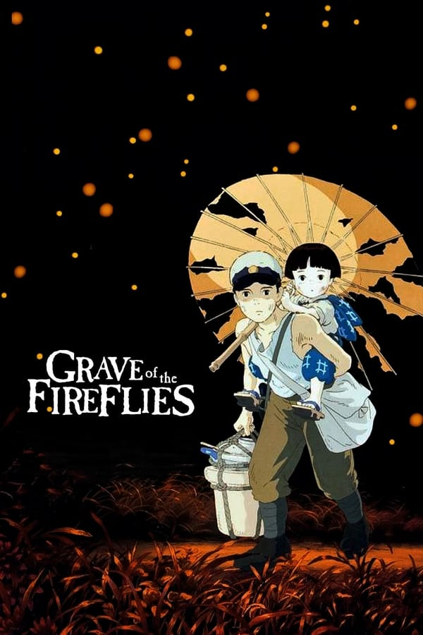

| Image |
Title |
description |
Release Date |
| |
Castle in the Sky |
The orphan Sheeta inherited a mysterious crystal that links her to the mythical sky-kingdom of Laputa. With the help of resourceful Pazu and a rollicking band of sky pirates, she makes her way to the ruins of the once-great civilization. Sheeta and Pazu must outwit the evil Muska, who plans to use Laputa's science to make himself ruler of the world. |
1986 |
|  |
Grave of the Fireflies |
In the latter part of World War II, a boy and his sister, orphaned when their mother is killed in the firebombing of Tokyo, are left to survive on their own in what remains of civilian life in Japan. The plot follows this boy and his sister as they do their best to survive in the Japanese countryside, battling hunger, prejudice, and pride in their own quiet, personal battle. |
1988 |
 |
My Neighbor Totoro |
Two sisters move to the country with their father in order to be closer to their hospitalized mother, and discover the surrounding trees are inhabited by Totoros, magical spirits of the forest. When the youngest runs away from home, the older sister seeks help from the spirits to find her. |
1988 |